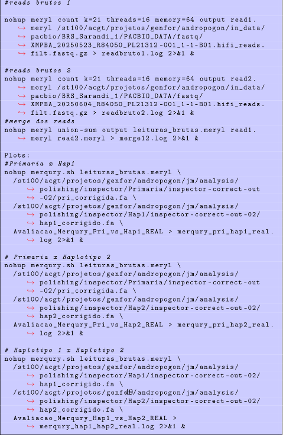
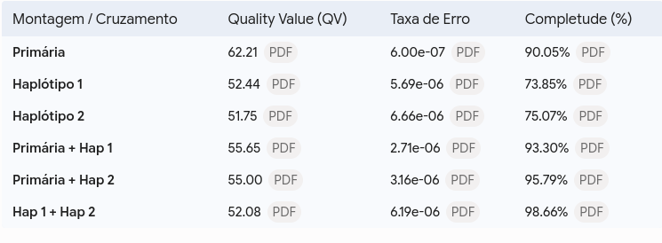
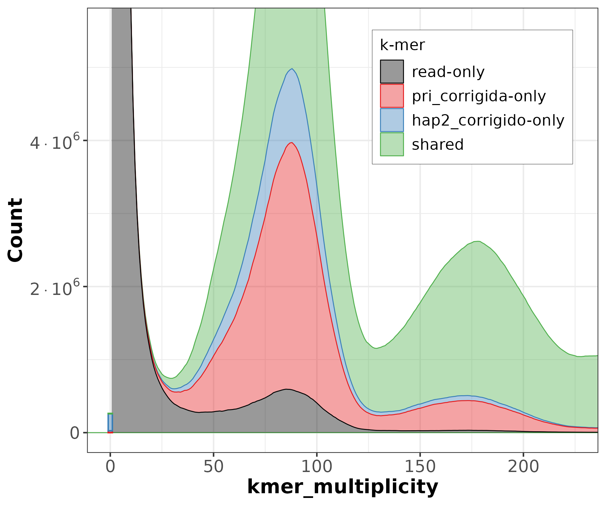
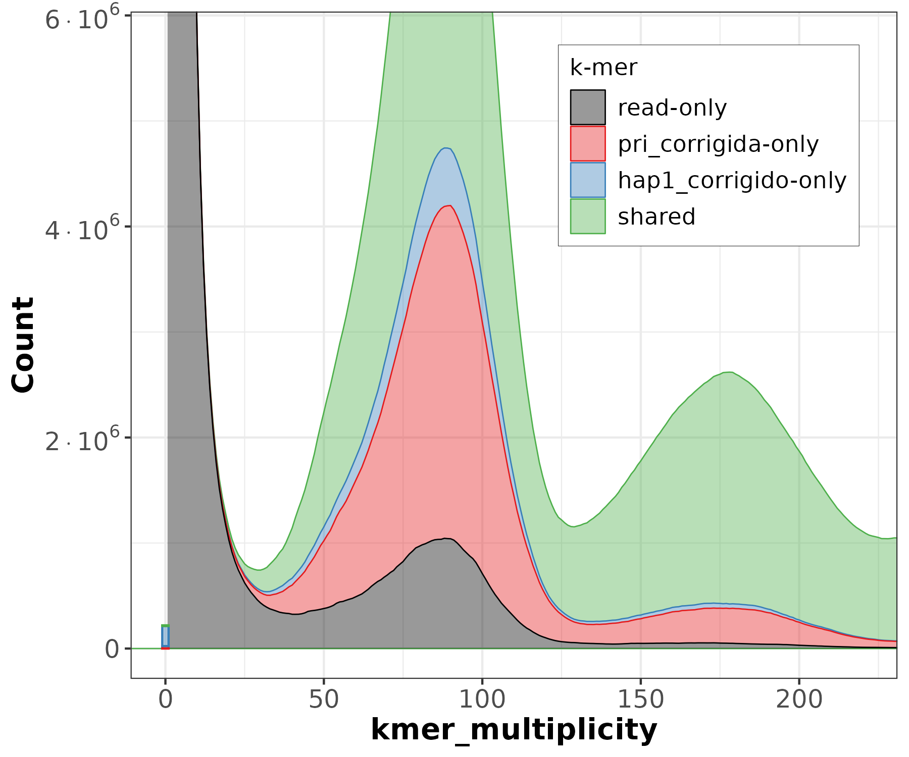
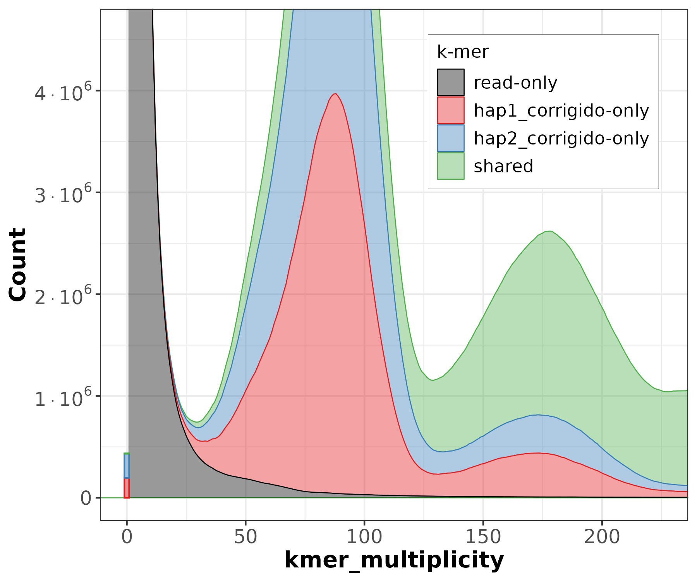

Disclaimer
Faz um tempinho desde a última atualização estrutural por aqui. Depois de lidar com os erros estruturais no Inspector e lapidando a montagem primária, chegou o momento da verdade. O foco hoje é avaliar a qualidade e a completude do nosso Andropogon gayanus usando o Merqury. A ideia é atestar a precisão das sequências e ter certeza de que o nosso querido montador, o Hifiasm, conseguiu resolver o quebra-cabeça de separar os haplótipos de um genoma tetraploide.
Introdução
Trabalhar com genomas poliplicados exige ferramentas que não te deixem na mão. O Merqury é uma ferramenta de avaliação reference-free (ótimo para genomas não-modelo que não têm genoma de referência) que extrai e analisa a frequência de k-mers direto das leituras brutas do PacBio HiFi.
O objetivo dele é mensurar a qualidade de consenso, o famoso QV (Quality Value), além da completude genômica. Para além dos números frios, o Merqury gera gráficos que mostram exatamente como o algoritmo lidou com a heterozigosidade e as regiões de repetição. Queremos provar que o Hifiasm não criou redundâncias bizarras na hora de separar as partições da montagem: Primária, Haplótipo 1 e Haplótipo 2.
COmo é um software de plotagem visual, ele gera muitos .png’s com diferentes criterios, vou colocar alguns deles aqui. Mas anteriormente vou mostrar a pipeline, já que ela deixa um pouco explicito a estratégia que eu utilizei para o Merqury.

Mão na Massa: Meryl e a Contagem de K-mers
A base do Merqury é o k-mer. Para gerar nosso banco de k-mers, rodei o Meryl no terminal do Ubuntu (sempre sendo o guerreiro de alta performance no laboratório). Basicamente, contamos k-mers com k=21 nas leituras e depois fizemos a união (merge) dos dados. Os comandos foram esses:
nohup meryl count k=21 threads=16 memory=64 output read1.meryl fastq_1 > readbruto1.log 2>&1 & nohup meryl count k=21 threads=16 memory=64 output read2.meryl fastq_2 > readbruto2.log 2>&1 & nohup meryl union-sum output leituras_brutas.meryl read1.meryl read2.meryl > merge12.log 2>&1 &
A Problemática do Software Nenhum pipeline é perfeito. O Merqury tem uma limitação de design chata: ele aceita apenas duas montagens simultâneas por run. Como eu tenho três (Primária, Hap1 e Hap2 corrigidos), a saída foi criar uma matriz de cruzamentos em pares. Um exemplo disparado no servidor foi o cruzamento da Primária com o Haplótipo 1:
nohup merqury.sh leituras_brutas.meryl pri_corrigida.fa hap1_corrigido.fa Avaliacao_Merqury_Pri_vs_Hap1_REAL > merqury_pri_hap1_real.log 2>&1 &
Repliquei a mesma lógica para (Primária x Hap2) e (Hap1 x Hap2).
Resultados Biológicos e Métricas QV
Os valores de QV do Merqury são bem rígidos. Qualquer coisa acima de 40 já é classificada como Gold Standard (Padrão-Ouro), significando um erro de menos de 1 base a cada 10.000.
Atingir um QV de 62.21 na montagem primária é um resultado incrivel. Estamos falando de uma precisão absurda, na casa dos 10⁻⁶ erros.

Dissecando os Gráficos: Arquitetura do Andropogon
O legal do Merqury é a análise visual. Avaliando os espectros de multiplicidade (Número de Cópias e Origem de Montagem), a estratégia do Hifiasm fica clara.
Primária vs Alelos (Hap1 e Hap2) Analisando a sobreposição da Primária com o Haplótipo 1, a completude vai para 93.30%. A Primária carrega o consenso majoritário (90.05%), e o Hap1 entra com 3.25% de informação exclusiva (pura heterozigose alelo-específica). Ao olhar a Primária com o Hap2, a completude sobe para 95.79%, indicando que o segundo haplótipo agregou um pouco mais de diversidade. Essa simetria mostra que o particionamento da heterozigose foi muito equilibrado bidirecionalmente.
O Teste de Redundância (Hap1 x Hap2) Quando cruzei apenas os haplótipos (sem a Primária), chegamos à completude máxima teórica de 98.66%. Porém, o gráfico de Origem da Montagem relevou uma enorme massa de regiões compartilhadas (sobreposição verde) no pico de múltiplas cópias (~180x). O que isso significa na prática? Que o Hifiasm teve que replicar quase todo o arcabouço estrutural conservado da planta dentro de cada haplótipo só para manter a contiguidade dos cromossomos.



Conclusão
Esse comportamento reduntante atesta e valida perfeitamente o papel central da nossa Montagem Primária. Ela atua como o molde que unifica e colapsa essa redundância em um genoma de referência coeso e limpo. Anatomicamente falando, o genoma gerado é sólido, representativo e totalmente apto para ancorar os processos de mapeamento de marcas moleculares e a etapa de anotação estrutural.